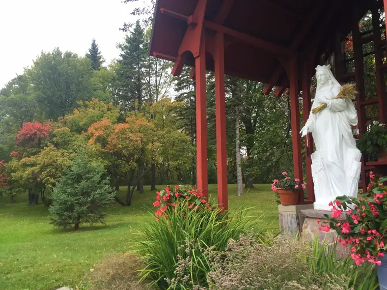
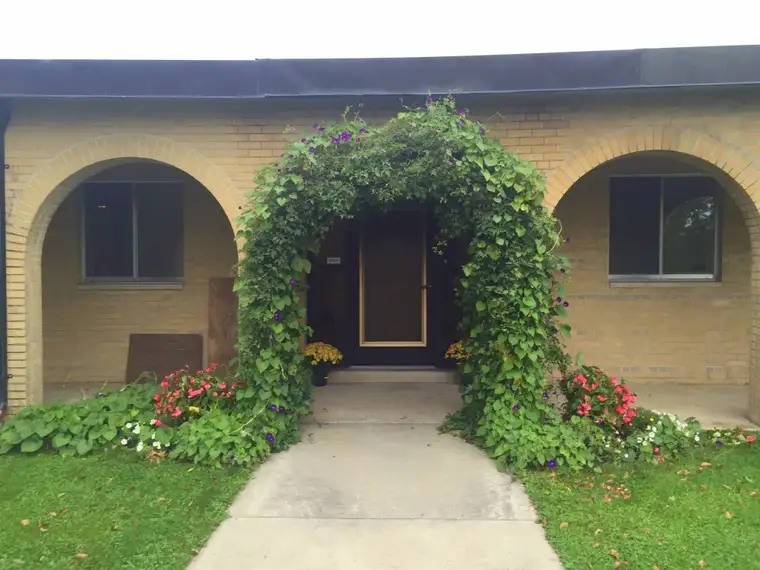
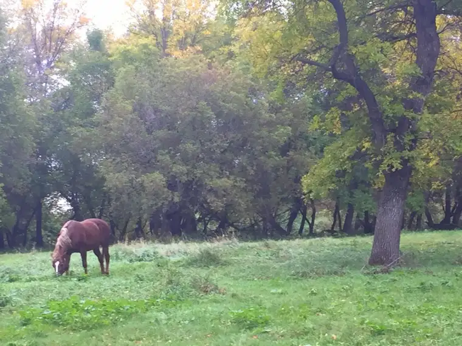
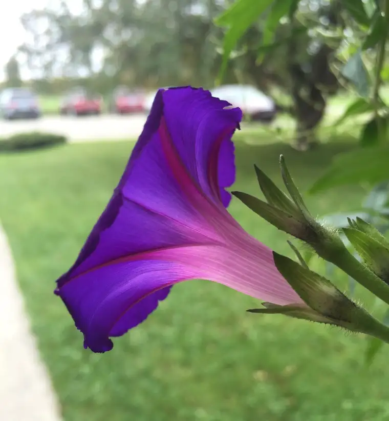

I’ll admit it: I was torn. I’d been given an opportunity to travel with a group of fellow faith seekers to a place that has become precious to me, a sacred space of refuge. How could I refuse?
And yet, it was also the launch day for the 40 Days for Life campaign here in North Dakota, and I didn’t want to miss being there, either.
In the end, I chose Carmel, knowing the 40 Days campaign will last 40 days, and the opportunity to travel to Carmel would not. And it turns out to have been the right decision. Carmel survives on and revolves around prayer, and prayer is what 40 Days for Life is all about. It is, more than anything else, a prayer effort, a campaign of love. And Carmel specializes in both.



After gathering and saying some beautiful introductory prayers, we entered the Jubilee Year of Mercy holy doors and took up a spot in the monastery chapel pews. Individuals from the Women of the Word group took turns leading each decade of the Rosary’s Glorious Mysteries. We dedicated our prayers in part to the people gathered downtown at that very moment who were either seeking, performing or trying to dissuade an act of abortion.
I could feel the divine presence of God as we recited the prayers, bead by bead, and it reminded me of a time a few weeks ago while praying Downtown Fargo on abortion day.
On that day, a man had entered the sidewalk on a mission to be combative. He’d been watching us pray the Rosary, listening to our words. The accusation suddenly burst out of him, strong and certain. “I heard you praying — praying for all the sinners. How judgmental of you.”
Perhaps it was the loud trucks that drive by on their way to a downtown delivery, or the sidewalk chatter from various directions, or some other noise that prevented him from hearing our words. But he’d gotten it wrong.
“Pray for us sinners, now and at the hour of our death.”
Those words of the Hail Mary that emerged from our lips were not meant to condemn anyone, but to point to our own faults, our own need for mercy. We cannot stand on the sidewalk and pray sincerely without recognizing our own sinful nature. We bring our own brokenness to the sidewalk as much as anyone.
It wasn’t “pray for you sinners” but a request for pardon for our own omissions. And when we broke into The Divine Mercy Chaplet a while later, our focus was not on our own perfection but on asking God, for the sake of His sorrowful passion, to “have mercy on us, and all the whole world.” Not, “Have mercy on them.” Us. We poor sinners who mess up all the time, every day.
It is only by the grace of God that we can stand there and pray, for others, and for ourselves. And I don’t know one person who doesn’t need a prayer or two. Certainly, there are plenty who might refuse one. The gentleman I mentioned said he’d be offended if I were to pray for him. And yet to me, it is the one thing of value I can offer. Prayers reach God’s heart, after all, and transcend what we as humans alone can effect.
It’s important that those who oppose our prayer activity Wednesdays see the reality, and not just the version that’s been spun by the organization responsible for gathering all those broken souls — our own included — to its corner.
From their Facebook page, they noted, “Tomorrow is the opening day of 40 Days for Life. We don’t know what exactly to expect…” before raving about how supported and loved their clients feel when their pro-choice escorts are present.
I find it interesting they seem to have been caught unaware. We’ve been doing this for a while now, and what you can expect is pretty much what happens every year. A lot of prayer. A lot of “pray for us sinners” and “have mercy on us and on the whole world.” That’s what you can expect.
During Monday night’s national launch of this campaign at our nation’s capitol, someone commented on social media that prayer isn’t enough. We need action. It’s true. But prayer precedes action if the action is to be effective. Prayer is the beginning point, a communication with the divine, through which we accomplish anything good in this life. If God doesn’t have a mark on it, it’s bound to fail.
God does not have a mark on abortion. This I know to be true. And those who have been holding it up as the end-all answer to unplanned pregnancy are beginning to falter.
As Tina from Students for Life of America shared at the capitol also Monday: “Millennials make up the biggest demographic of people who think abortion should be banned after 20 weeks. We are the pro-life generation!…Right now we have Planned Parenthood and their allies on the run.”
Prayer works. It’s working. We’re winning. We just have to keep on keeping on. God-willing, we can help open the eyes of those in our society who remain asleep.

I’ll close with the words of Georgette, a post-abortive woman from the Silent No More campaign, who also spoke Monday night. She is the reason we pray. The babies cannot speak for themselves, but their broken mothers are the mouthpieces that point us to the truth of what abortion really is and does.
“I had an abortion when I was 16…I remember driving to the clinic and thinking, this feels wrong, but because it was legal I thought, it has to be okay. The abortion itself was painful…and when it was over, the nurse walked by with something in her hands and I asked her, ‘Is that my baby?’ She just said, “Everything is going to be fine, Honey’…but I couldn’t stop crying.”
Georgette then went on to correct the record: “Abortion isn’t empowering for women or anyone. It’s exploitative, and that’s why I am Silent No More.”
We’re ready for the tears to end. Please pray with us, from wherever you are.

Q4U: What about the pro-life movement touches you most?